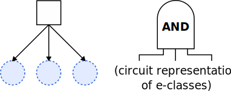
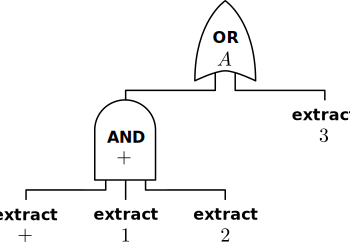

E-graphs as Circuits, and Optimal Extraction via Treewidth
Glenn Sun
Joint work with Yihong Zhang and Haobin Ni
University of Washington
arXiv:2408.17042
EGRAPHS November Community Meeting
Overview
Our main contribution is an equivalence:
e-graphs $\leftrightarrow$ (cyclic) monotone circuits
This allows us to:
- Apply [KTX17] to efficiently solve extraction, parameterized by treewidth.
- More easily simplify e-graphs, which significantly reduces treewidth.
The algorithm is very similar to [GLP24].
| [KTX17] | Iyad Kanj, Dimitrios M. Thilikos, and Ge Xia. On the parameterized complexity of monotone and antimonotone weighted circuit satisfiability. |
| [GLP24] | Amir Kafshdar Goharshady, Chun Kit Lam, and Lionel Parreaux. Fast and Optimal Extraction for Sparse Equality Graphs. |
Monotone circuits
A monotone circuit is a circuit with only AND and OR gates.
e-node $\leftrightarrow$ all children true $\leftrightarrow$ AND
e-class $\leftrightarrow$ at least one child true $\leftrightarrow$ OR
$\longrightarrow$
What about cycles?
| $x$ | old output | new output |
|---|---|---|
| 0 | 0 | 0 |
| 0 | 1 | 0 |
| 1 | 0 | 0 |
| 1 | 1 | 1 |
But e-graphs researchers never have to think about this. Why not?
What about cycles?
| $x$ | old output | new output |
|---|---|---|
| 0 | 0 | 0 |
| 0 | 1 | 0 |
| 1 | 0 | 0 |
| 1 | 1 | 1 |
But e-graphs researchers never have to think about this. Why not?
What about cycles?

| $x$ | old output | new output |
|---|---|---|
| 0 | 0 | 0 |
| 0 | 1 | 0 |
| 1 | 0 | 0 |
| 1 | 1 | 1 |
But e-graphs researchers never have to think about this. Why not?
✅
✅
❌
❌
- To find the minimum cost extraction, only need to consider minimal solutions.
- For this particular circuit construction, every choice of minimally satisfying inputs (what to extract) has a unique way to set the rest of the circuit.
Converting to circuits
To convert an e-graph $G$ to a circuit $C$:
- Replace every e-class with an OR gate.
- Replace every e-node with an AND gate and a variable connected to it.
Observation. After this conversion from e-graph to circuit, there is a bijection
minimal extractions of $G$ $\leftrightarrow$ minimal satisfying solutions of $C$.
This bijection preserves acyclicity.
(acyclic: extraction has no self-dependencies, circuit evaluation has no 1-cycles)
$\implies$ Extraction is equivalent to weighted monotone circuit SAT!
Minimum weight monotone circuit SAT
[KTX17] already solved this, albeit stated only for circuits that do not have cycles.
Proposition 4.7 in [KTX17]. Let $C$ be a monotone circuit (with no cycles) and $G$ be the underlying undirected graph with $n$ nodes. If a tree decomposition for $G$ and treewidth $k$ is given, then a minimum weight satsifying assignment of $C$ can be computed in time $2^{O(k)}\text{poly}(n, k)$.
The algorithm works unchanged for circuits with cycles, if we allow cyclic extraction!
- Intuition: The undirected graph $G$ already "forgot" whether $C$ is a DAG.
For acyclic extraction, can maintain the transitive closure of the subgraph of 1-edges to make sure no 1-cycles are formed, achieving $2^{O(k^2)}\text{poly}(n, k)$.
$\longrightarrow$
Circuit simplification
E-graph simplification before extraction has been used with ILP (i.e. see https://github.com/egraphs-good/extraction-gym/pull/16)
With circuits, we can leverage existing circuit minimization tools that support sequential circuits*.
- These preserve the whole $\{\text{input}\} \times \{\text{old state}\} \to \{\text{new state}\}$ table.
- Takes care of simplifications like the previous slide.
But we only care about minimal satisfying solutions, sometimes acyclic.
- Can write additional specialized rules to take advantage of this!
| * | Need to restrict to the procedures that preserve monotonicity. |
Custom simplification rules
Because we are only interested in minimal extractions:
$\longrightarrow$
Custom simplification rules
If we are only interested in acyclic extractions:
$1$
$1$
$1$
$1$
Custom simplification rules
If we are only interested in acyclic extractions:
$0$
delete this gate and all out-neighbors that are AND gates recursively
Custom simplification rules
If we are only interested in acyclic extractions:
$\downarrow$
Simplification results
We applied several ad-hoc rules like this to a test set of e-graphs used with egg. Depending on which applications the e-graphs came from, we observed:
- Up to 65% reduction in treewidth.
- 42-97% reduction in $|V|$.
- 57-96% reduction in $|E|$.
A more systematic approach might improve this further.
Open directions
- Can the treewidth-based extraction algorithm be adapted to support more general cost functions?
- Cost of an e-node is often written as a function of the cost of children.
- Current algorithm (both [GLP24] and us) has no way to deal with the cost of a yet-unknown child.
- How much simplification can you achieve if you actually adapted modern circuit simplification software that is used in practice?
- Can we find more applications of the connection between e-graphs and circuits?
Thank you!